SOLIDWORKS-PDM工作流程
1新状态：
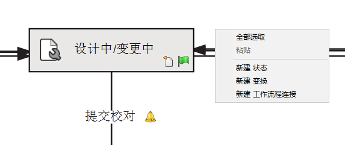 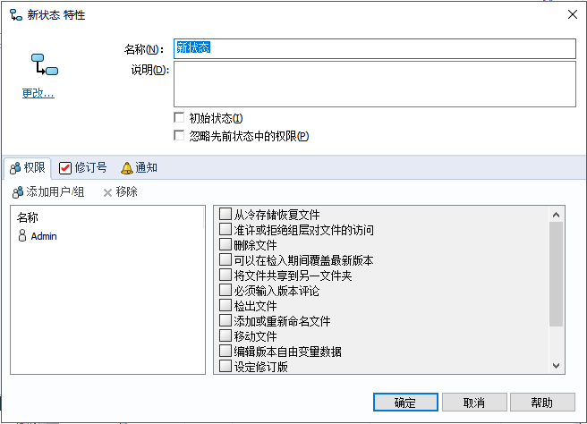1-1 权限、选择用户和组授予访问该状态下文件的权限，帮助。
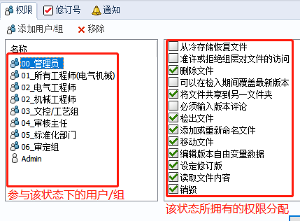1-2 修订号：使用修订版号可以指派此状态使用的修订版号，还可以指定版本号计数器更新的方式。
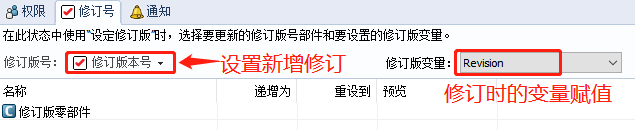1-3 通知：当文件夹中有文件检入、检出或状态延迟时自动给用户发送通知。
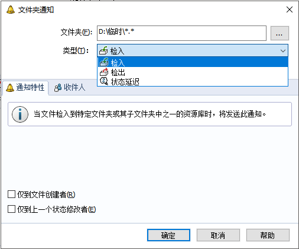2新变换：
选择源目标和下一步目标。
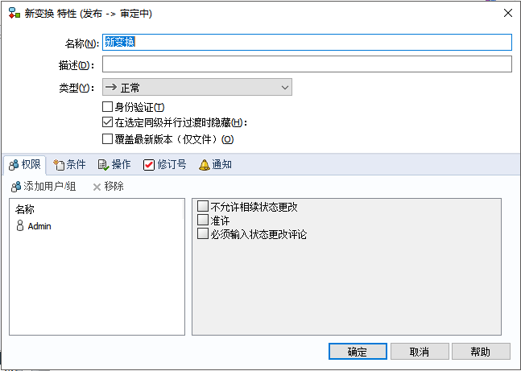2-1 权限：使用添加用户/组对话框选择用户和组，授予特定状态的文件权限或授予运行过渡的权限；
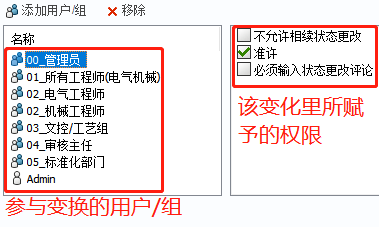2-2 条件：生成条件来定义哪些文件可以通过过渡。
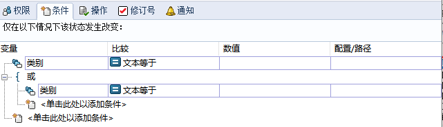2-3 操作：定义过渡触发的事件。 这些操作将按它们在操作列表中的顺序运行
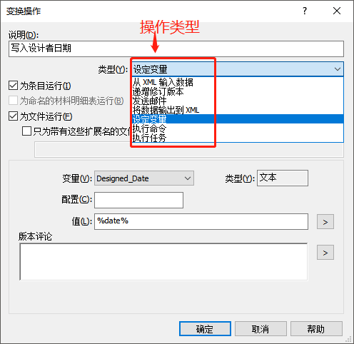2-4 修订号：使用修订版号选项卡指定如何为源状态增量定义修订版号零部件或重设为通过工作流程过渡的文件。
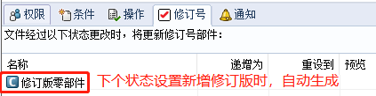2-5 通知：使用通知选项卡在文件通过该工作流程过渡时自动给用户发送通知。
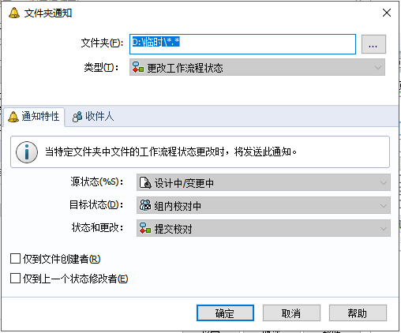 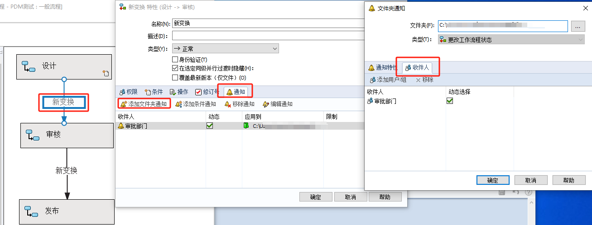 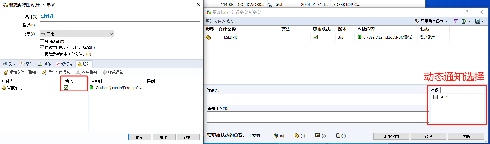3特性
使用工作流程属性对话框可以指定工作流程的名称和说明，以及定义可以进入工作流程的文件。
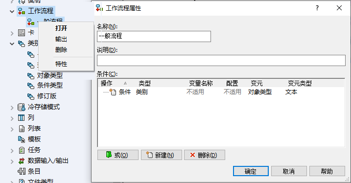3、工作流程链接：使用工作流程连接对话框可以将一个工作流程连接到另一个工作流程。
工作流程连接
当有多个流程时，你可以使用【新建工作流程连接】关联起不同流程的“状态”。
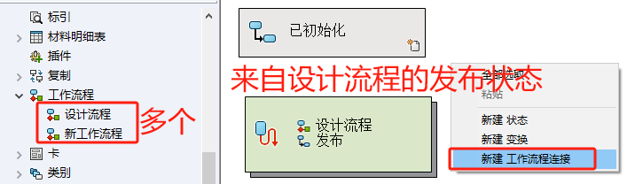